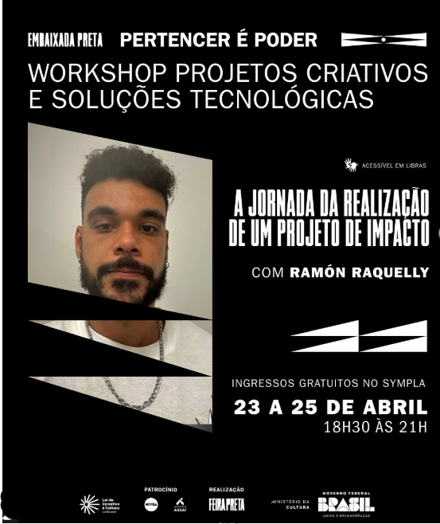

Proyecto
Embaixada Preta São Paulo / Feira Preta
Taller de Proyectos Creativos y Soluciones Tecnológicas
Taller gratuito de tres encuentros para artistas, creadores, emprendedores y activistas para transformar ideas en proyectos culturales reales. Actuando como productor ejecutivo y especialista en innovación social, realizando capacitaciones sobre ideación, recaudación de fondos, herramientas digitales, metodologÃas ágiles y gestión creativa de proyectos.
Socios: Embaixada Preta São Paulo, Feira Preta

Detalles
- Actuación
- Realización del taller “Proyectos Creativos y Soluciones Tecnológicasâ€, enfocado en producción cultural, innovación social, inteligencia artificial, planificación, recaudación de fondos y transformación de ideas en proyectos de impacto.
- Formato
- Tres reuniones presenciales realizadas entre el 23 y el 25 de abril, de 18.30 a 21.00 horas, en la Embaixada Preta São Paulo.
- Temas
- Producción cultural, proyectos creativos, impacto social, tecnologÃas, DeepSeek, ChatGPT, metodologÃas ágiles, gestión y recaudación de fondos.